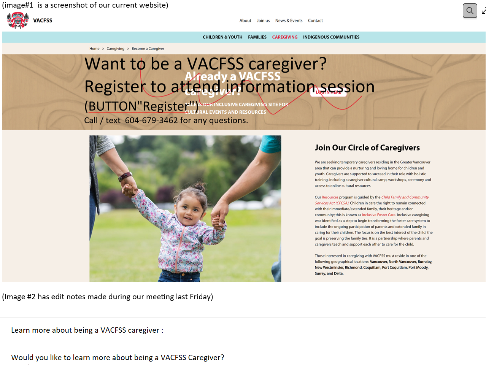
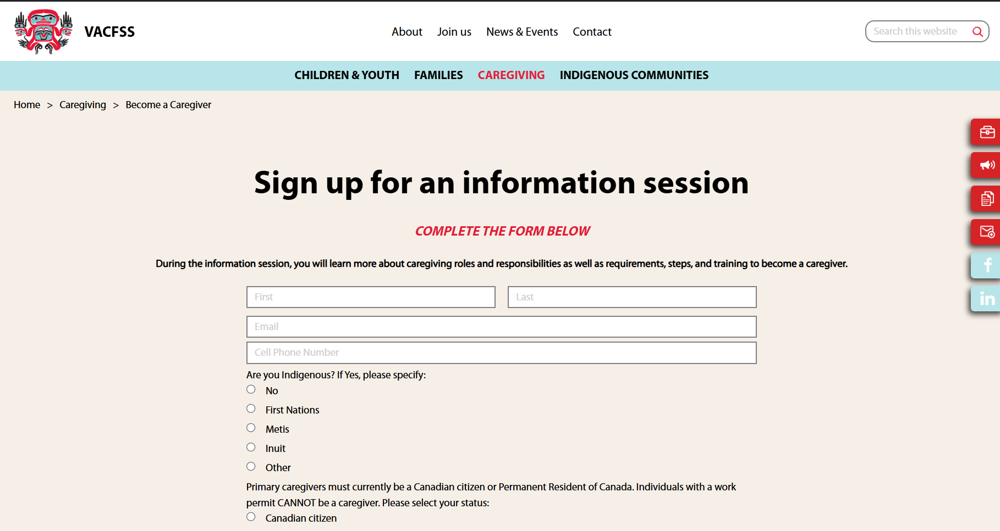
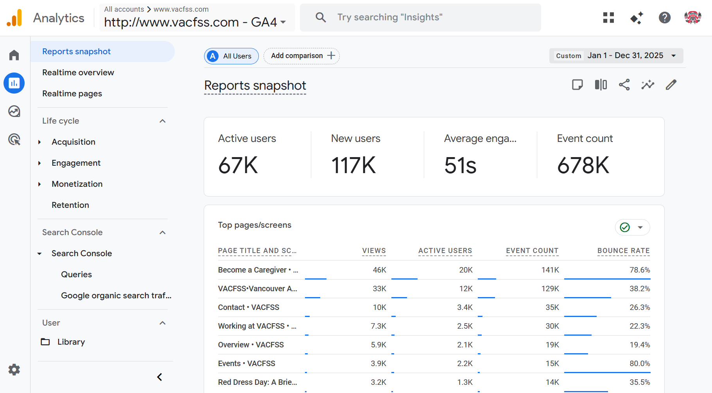
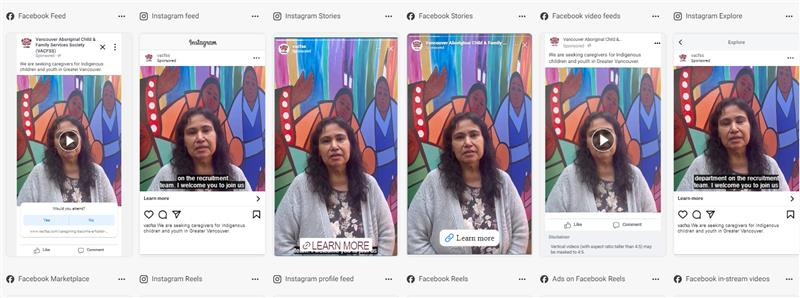

Background
VACFSS (Vancouver Aboriginal Child and Family Services Society) supports Indigenous children and families in Vancouver. A critical part of their work is recruiting foster and family caregivers — yet the website's path to that information was buried, text-heavy, and filled with stock photography that looked identical to every other social services organization.
I conducted two rounds of research — staff interviews in 2024 and caregiver interviews in 2026 — to measure the real impact of navigational and content changes on the site's core conversion goal: getting a potential caregiver to reach out.
The Community Behind the Work
One of the key design decisions was replacing generic stock photography with real on-site images of the VACFSS community — photos that reflect the people and culture the organization actually serves.
.png)
.png)
.png)
.png)
.png)
.png)
On-site photography by Angela Shen — replacing stock images to reflect the real VACFSS community rather than generic social services imagery · © Angela Shen
Round 1: Staff Interviews (2024)
I started by testing with 3 VACFSS staff members — people who use the site regularly. The core research question was whether even internal users could efficiently navigate to the organization's most important conversion page.
Critical Finding: 2+ Minutes to Navigate
Every participant took over 2 minutes to locate the Becoming a Caregiver page — despite working at the organization. This wasn't a user error; it was a structural flaw. If staff couldn't find it quickly, a potential caregiver arriving from an ad had almost no chance of converting organically.
Supporting Data: Referral Pattern (2024)
When reviewing how past caregivers had first made contact, 3 out of 5 had been directly referred by someone they knew — they never needed to navigate the site independently. The website was not functioning as a discovery or conversion tool; word of mouth was carrying the full weight of recruitment.
This confirmed that the navigation problem wasn't being caught because it was being bypassed — by people who already knew where to call.
Pain Points Identified
Navigation Depth to a Critical Page
The Becoming a Caregiver page was buried several levels deep with no prominent calls to action on the homepage or top-level navigation. For someone arriving cold from a Facebook ad, the path was invisible.

Original site — caregiver page buried with no visible CTA
Dense text with no hierarchy — high drop-off for users scanning for answers
Lengthy, Unbroken Blocks of Text
The site relied on dense paragraphs with no visual hierarchy — no headers, callouts, or scannable structure. For a potential caregiver who arrives with a question, not a research mindset, this created immediate cognitive friction and high drop-off likelihood.
Stock Photography That Erased Identity
The site used generic stock images that were indistinguishable from dozens of other social services organizations. For an Indigenous-led organization whose community connection is central to its mission, this represented a significant misalignment between visual identity and organizational values.
Real community photography — what replaced the stock images · © Angela Shen
Before & After: The Caregiver Page
The most impactful single improvement was restructuring the Becoming a Caregiver page — breaking up text blocks, adding visual hierarchy, and making the call to action prominent and immediate.
Original page — dense text blocks, no scannable structure, unclear call to action · Screenshot for research purposes

Redesigned page — broken-up content, clear sections, descriptive copy alongside a visible call to action · © Angela Shen
Results
The improvements were measured against the same ongoing paid ad campaign — isolating the website changes as the variable.
+50%
Increase in caregiver information inquiries after UX improvements
Same
Ad budget and campaign — no increase in spend
3 / 5
Past caregivers relied on direct referral — not the website

Google Analytics — traffic and inquiry data tracking the impact of website changes

Facebook referral volume — 31K and 28K referrals demonstrating the ad-to-site pipeline that the UX improvements were designed to convert
The Ad Campaign
The UX work was paired with an active recruitment ad campaign across Meta and Google. Understanding how users were arriving at the site shaped where the UX improvements needed to be focused — particularly on the first landing experience after clicking a Facebook ad.

2024 campaign performance — baseline period before UX changes

2025 campaign performance — measuring impact of improved landing experience

Recruitment ads in market — driving traffic to the pages being redesigned
Day in the Life of a Social Worker — Recruitment Video
Beyond digital and print, I researched, produced, and edited an original recruitment video — designed to give prospective social work students an authentic window into the role before committing to the field.
Day in the Life of a Social Worker — produced for VACFSS caregiver and staff recruitment
200+
Organic views with no paid promotion
Organic
No ad spend — distributed through social and in-person channels
Live
Screened at social work college recruitment sessions
Production Process
Market Research
Before picking up a camera, I researched the landscape of "day in the life" recruitment videos across social services, healthcare, and non-profit sectors — identifying what made them land or fall flat. Most failed because they felt scripted or promotional rather than honest. The benchmark was authenticity: show the real work, not a brochure version of it.
Equipment Decisions
Based on the research, I made targeted equipment purchases to achieve a documentary-style look that matched the tone — handheld warmth over polished corporate. The goal was production quality that felt intentional without feeling over-produced.
Co-Direction & Scripting
I co-directed and scripted the video, working with VACFSS staff to balance the narrative arc — giving enough structure to be informative while leaving room for the genuine, unscripted moments that make recruitment content believable. The script mapped key questions a prospective social worker would actually have, then built answers around real footage rather than narration.
Filming & Editing
I handled both filming and post-production editing — pacing the cut to feel approachable rather than overwhelming, and shaping the story so it ends with the emotional case for the role, not just the practical description of it.
How It Was Used
The video was screened during in-person recruitment visits to social work colleges — giving students a concrete, honest preview of what the role looks like day-to-day. It extended the reach of those sessions beyond the room: students who attended could share the video, and students who didn't attend could still access it organically.
200+ organic views with no paid promotion demonstrates that the content was compelling enough to travel on its own — the clearest signal that the authenticity-first approach worked.
Published Writing — Honouring the Journey of Our Youth
As part of the communications role, I wrote and photographed coverage of VACFSS's annual youth transition ceremony — a gathering at the Native Education College honouring youth turning 19 as they move into adulthood.
On-site photography from the ceremony — © Angela Shen
About the Article
Written and photographed on-site, the piece documents the blanket ceremony, coin-giving ceremony, and performances by Indigenous artists from multiple nations. A Youth Advisory Committee member's remarks on "pride in their resilience and Indigenous roots" anchors the piece.
Published on the VACFSS website on June 11, 2024, by Angela Shen, Communications and PR Assistant.
Read the Article ↗Short Video — Annual Cedar Headband Making Workshop
A short cultural documentation video produced for the VACFSS annual cedar headband making workshop — filmed, edited, and published as part of the ongoing communications work.
Cedar headband making workshop — filmed and edited by Angela Shen for VACFSS · © Angela Shen
Context
Cedar headbands carry cultural significance within the communities VACFSS serves — they were also part of the youth transition ceremony covered in the written article above. Producing this video required the same sensitivity as the editorial work: documenting a meaningful cultural practice accurately and respectfully, without reducing it to content.
View on VACFSS ↗Published Interview — Elder April Bennett, 28th Anniversary
I conducted and wrote a staff spotlight interview with Elder April Bennett marking her 28th anniversary at VACFSS — a piece documenting her contributions to restorative practice and community care over nearly three decades.
.png)
Photo from the VACFSS community — Angela Shen
About the Piece
A staff spotlight interview in the Restorative Practice section of the VACFSS website, honouring Elder April Bennett's 28 years of service. Conducting an interview with an Elder required cultural sensitivity, careful listening, and an editorial approach that centred her voice rather than summarizing it.
Read the Interview ↗Round 2: Caregiver Interviews (2026)
In 2026, I followed up with caregivers who had come through the Facebook recruitment pipeline to understand their actual experience navigating from ad to inquiry.
Finding: Direct Ad Path Removed the Navigation Problem
Of the caregivers interviewed in 2026, 3 had come directly through the Facebook page. When asked about finding the caregiver page, they said the process felt simple — because the ad linked directly to it, removing the navigation barrier entirely.
Importantly, they noted that the more descriptive content on the page after the redesign was valuable — it answered the questions they arrived with and gave them enough context to take the next step. The text improvement wasn't just visual polish; it was the difference between someone understanding the process and someone leaving to look elsewhere.
This confirmed that the two-part fix worked: the ad reduced navigation friction, and the improved page content converted the interest into action.
Key Takeaways
The 2-minute navigation finding from staff who knew the site was the clearest signal that the problem was structural, not behavioral. Fixing it required two things: making the page discoverable (through direct ad links and improved navigation), and making the page worth staying on (through restructured content and authentic photography).
The 50% increase in inquiries on the same ad budget shows that UX improvements are a multiplier on existing marketing investment — the audience was always there; the website just wasn't converting them.
The shift from stock photography to on-site imagery also matters beyond aesthetics. For an Indigenous-led organization, showing the real community signals cultural authenticity in a way that stock images actively undermine — and that trust is foundational to someone making the decision to become a caregiver.